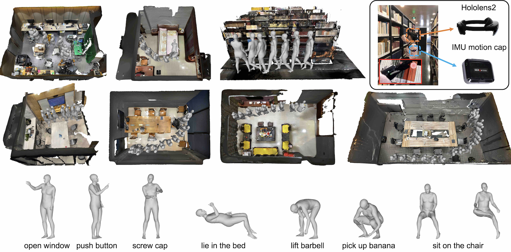
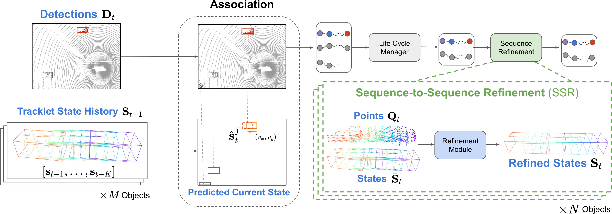

Publications
-
See Google Scholar for a full list of papers. *: equivalent contribution, †: corresponding author
 |
GIMO: Gaze-Informed Human Motion Prediction in Context |
 |
SpOT: Spatiotemporal Modeling for 3D Object Tracking |
|
Domain Adaptation on Point Clouds via Geometry-Aware Implicits |
|
ADeLA: Automatic Dense Labeling with Attention for Viewpoint Adaptation in Semantic Segmentation |
|
Object Pursuit: Building a Space of Objects via Discriminative Weight Generation |
|
IFR-Explore: Learning Inter-object Functional Relationships in 3D Indoor Scenes |
|
DCL: Differential Contrastive Learning for Geometry-Aware Depth Synthesis |
|
DyStaB: Unsupervised Object Segmentation via Dynamic-Static Bootstrapping |
|
Learning Semantic-Aware Dynamics for Video Prediction |
|
Learning to Manipulate Individual Objects in an Image |
|
FDA: Fourier Domain Adaptation for Semantic Segmentation |
|
Phase Consistent Ecological Domain Adaptation |
|
Dense Depth Posterior (DDP) from Single Image and Sparse Range |
|
Unsupervised Moving Object Detection via Contextual Information Separation |


Education
- 2014.9 - 2019.4: Ph.D. in Computer Science, University of California, Los Angeles (UCLA)
- 2011.9 - 2014.6: M.S. in Electrical Engineering, King Abdullah University of Science and Technology (KAUST)
- 2007.9 - 2011.7: B.E. in Electronic Information Engineering, University of Science and Technology of China (USTC)
Professional Service
- Program committee/reviewer:
- Conferences: CVPR, ICCV, ECCV, ICML, ICLR, IJCAI, AAAI, NeurIPS
- Journals: TPAMI, TIP, IJCV, RAL